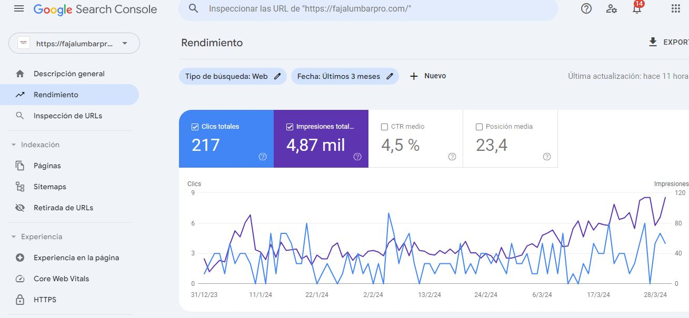

Últimos pasos
Por último, de forma breve os enseñaremos a manejar los datos y los análisis disponibles de una web que ya está en marcha.
Por último, de forma breve os enseñaremos a manejar los datos y los análisis disponibles de una web que ya está en marcha.
La analítica web es el proceso de recopilación, medición, análisis y presentación de datos relacionados con la actividad de un sitio web o una aplicación en línea. El objetivo principal de la analítica web es comprender el comportamiento de los usuarios y el rendimiento del sitio web con el fin de tomar decisiones informadas para mejorar su eficacia y eficiencia.
La analítica web implica el uso de diversas herramientas y tecnologías para recopilar datos sobre la actividad de los usuarios, como el número de visitantes, las páginas vistas, el tiempo de permanencia en el sitio, las conversiones, las fuentes de tráfico y muchos otros indicadores clave de rendimiento (KPIs).
Algunas de las principales funciones y objetivos de la analítica web son:
Medir el tráfico del sitio web: Seguimiento del número de visitantes que acceden al sitio web en un período de tiempo determinado y análisis de las tendencias de tráfico a lo largo del tiempo.
Analizar el comportamiento de los usuarios: Estudio del comportamiento de los usuarios en el sitio web, como las páginas visitadas, el tiempo de permanencia en el sitio, las acciones realizadas y los patrones de navegación.
Optimizar la experiencia del usuario: Identificación de áreas de mejora en la usabilidad y la experiencia del usuario para aumentar la retención y la satisfacción del usuario.
Evaluar el rendimiento de las campañas de marketing: Seguimiento del rendimiento de las campañas de marketing digital, como SEO, SEM, redes sociales y correo electrónico, para determinar su efectividad y retorno de la inversión (ROI).
Mejorar la conversión y la tasa de éxito: Análisis de los procesos de conversión y la optimización de embudos de conversión para aumentar las conversiones y las ventas en línea.
Para llevar a cabo la analítica web, se utilizan diversas herramientas y tecnologías, como Google Analytics, Adobe Analytics, Piwik (Matomo), entre otras. Estas herramientas proporcionan informes y métricas detalladas que permiten a los propietarios de sitios web y a los profesionales del marketing digital tomar decisiones informadas para mejorar el rendimiento y la efectividad del sitio web. En resumen, la analítica web es una herramienta fundamental en el mundo digital para entender y mejorar el rendimiento de los sitios web y las aplicaciones en línea.
Google Search Console es una herramienta gratuita proporcionada por Google que permite a los propietarios de sitios web supervisar, analizar y optimizar el rendimiento de su sitio en los resultados de búsqueda de Google. Proporciona información valiosa sobre cómo Google ve tu sitio web y te ayuda a identificar oportunidades de mejora para aumentar la visibilidad y el tráfico orgánico.
Paso 1: Acceder a Google Search Console
Accede a Google Search Console desde tu navegador web.
Inicia sesión con tu cuenta de Google.
Una vez dentro, haz clic en "Añadir propiedad" y selecciona el tipo de propiedad que deseas verificar: "Dominio" o "URL de prefijo".
Sigue las instrucciones para verificar la propiedad. Puedes elegir entre diferentes métodos de verificación, como cargar un archivo HTML en tu sitio web o añadir una etiqueta de HTML en el código de tu sitio.
Paso 2: Explorar el Panel de Control
Una vez que hayas verificado tu propiedad, serás llevado al panel de control de Google Search Console. Aquí es donde encontrarás una visión general de la salud y el rendimiento de tu sitio web.
Resumen: Aquí verás un resumen de las principales métricas, como el rendimiento de búsqueda, la cobertura del índice, los problemas de seguridad y mucho más.
Rendimiento: Esta sección te muestra datos detallados sobre cómo tu sitio web está apareciendo en los resultados de búsqueda de Google. Puedes ver métricas como impresiones, clics, CTR (porcentaje de clics) y posición promedio de búsqueda para diferentes consultas de búsqueda, páginas y dispositivos.
Cobertura: Aquí puedes encontrar información sobre cómo Google rastrea e indexa tu sitio web. Puedes ver cuántas páginas están indexadas, cuántas tienen errores, advertencias o están excluidas del índice.
Sitemaps: En esta sección puedes enviar y controlar sitemaps XML para ayudar a Google a descubrir e indexar el contenido de tu sitio de manera más eficiente.
Mejoras: Aquí encontrarás sugerencias y oportunidades de mejora para tu sitio web, como la optimización de datos estructurados, la mejora de la experiencia móvil y la corrección de errores de velocidad de página.
Paso 3: Explorar las Funciones Clave
Una vez que te hayas familiarizado con el panel de control, puedes explorar las diferentes funciones y herramientas que ofrece Google Search Console para ayudarte a optimizar tu sitio web.
Inspección de URL: Esta herramienta te permite analizar una URL específica de tu sitio web y ver cómo Google la ve, incluyendo el estado de indexación, los errores de rastreo y las mejoras recomendadas.
Informe de Enlaces: Aquí puedes ver quién enlaza a tu sitio web y qué páginas están recibiendo más enlaces. Esto te ayuda a identificar oportunidades de construcción de enlaces y a detectar enlaces no deseados que podrían ser perjudiciales para tu sitio.
Experiencia del Usuario en Dispositivos Móviles: Este informe te muestra cómo tu sitio web se desempeña en dispositivos móviles y te proporciona recomendaciones para mejorar la experiencia del usuario móvil.
Análisis de Datos Estructurados: Puedes utilizar esta herramienta para verificar la implementación de datos estructurados en tu sitio web y asegurarte de que Google pueda entender y mostrar tu contenido de manera adecuada en los resultados de búsqueda enriquecidos.
Paso 4: Corregir Problemas y Optimizar el Sitio
Una vez que hayas explorado las diferentes secciones y herramientas de Google Search Console, es importante tomar medidas para corregir los problemas y optimizar tu sitio web para mejorar su rendimiento en los resultados de búsqueda.
Corregir Errores de Indexación: Utiliza el informe de cobertura para identificar y corregir errores de indexación, como páginas no encontradas, errores de rastreo y páginas bloqueadas por el archivo robots.txt.
Optimizar Datos Estructurados: Asegúrate de que tus datos estructurados estén correctamente implementados y optimizados para mejorar la visibilidad de tu contenido en los resultados de búsqueda enriquecidos.
Mejorar la Experiencia del Usuario: Utiliza las recomendaciones proporcionadas en el informe de mejoras para optimizar la experiencia del usuario en tu sitio web, incluyendo la velocidad de carga de la página, la experiencia móvil y la accesibilidad.
Monitorear el Rendimiento: Utiliza las herramientas de análisis y seguimiento de Google Search Console para monitorear el rendimiento de tu sitio web en los resultados de búsqueda y realizar ajustes según sea necesario.
Paso 5: Mantenerse Actualizado y Seguir Aprendiendo
El SEO es un campo en constante evolución, por lo que es importante mantenerse actualizado sobre las últimas tendencias, técnicas y actualizaciones de los algoritmos de los motores de búsqueda. Continúa explorando Google Search Console y otras herramientas de SEO, participa en comunidades en línea y sigue blogs y recursos confiables para mejorar tus habilidades y conocimientos en SEO.ç

Obra publicada con Licencia Creative Commons Reconocimiento Compartir igual 4.0